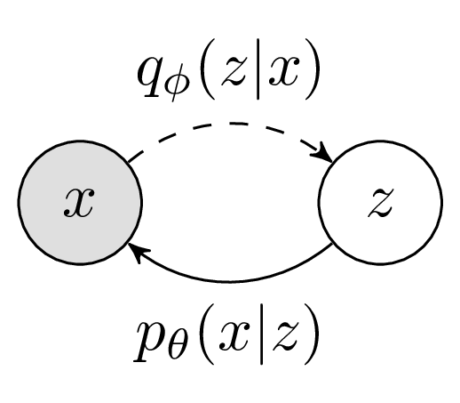
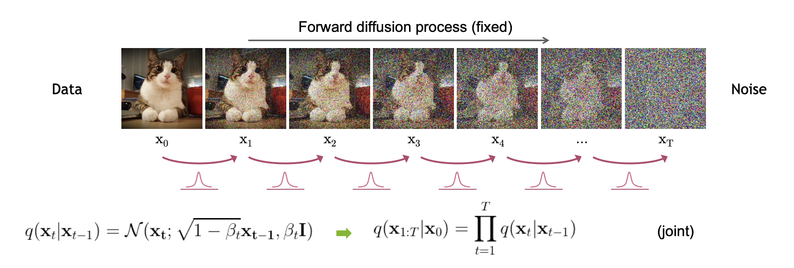
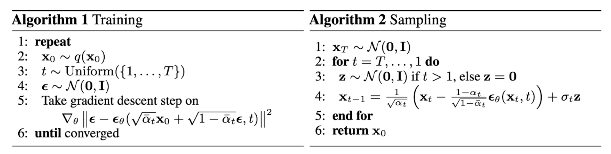

从VAE到DDPM
\[ \newcommand{\E}{\mathbb E} \newcommand{\KL}{\mathrm{KL}} \newcommand{\calN}{\mathcal N} \newcommand{\x}{\mathbf x} \newcommand{\z}{\mathbf z} \newcommand{\coloneqq}{\mathrel{\mathrel{\vcenter{:}}=}} \]
VAE 回顾
在之前的文章中，我们详细地梳理了一遍 VAE，这里做一个简单回顾。

在 VAE 中，为了最大化对数似然 \[ L(\theta)=\log p_\theta(x)=\log\left(\int_zp_\theta(x\vert z)p(z)\mathrm dz\right) \] 我们引入变分后验 \(q_\phi(z\vert x)\)： \[ \begin{align} L(\theta)&=\log p_\theta(x)\\ &=\E_{z\sim q_\phi(z\vert x)}\left[\log p_\theta(x)\right]\\ &=\E_{z\sim q_\phi(z\vert x)}\left[\log\frac{p_\theta(x,z)}{p_\theta(z\vert x)}\right]\\ &=\E_{z\sim q_\phi(z\vert x)}\left[\log\left(\frac{p_\theta(x,z)}{p_\theta(z\vert x)}\cdot\frac{q_\phi(z\vert x)}{q_\phi(z\vert x)}\right)\right]\\ &=\underbrace{\E_{z\sim q_\phi(z\vert x)}\left[\log\frac{p_\theta(x,z)}{q_\phi(z\vert x)}\right]}_\text{ELBO}+\underbrace{\E_{z\sim q_\phi(z\vert x)}\left[\log\frac{q_\phi(z\vert x)}{p_\theta(z\vert x)}\right]}_{\KL(q_\phi(z\vert x)\| p_\theta(z\vert x))}\\ &\geq \text{ELBO} \end{align}\tag{1}\label{vae} \] 得到证据下界 ELBO，通过最大化 ELBO 来最大化对数似然。进一步地，ELBO 还可以拆写成重构项和 KL 正则项： \[ \begin{align} \text{ELBO}&=\E_{z\sim q_\phi(z\vert x)}\left[\log\frac{p_\theta(x,z)}{q_\phi(z\vert x)}\right]\label{elbo-vae}\tag{2}\\ &=\E_{z\sim q_\phi(z\vert x)}\left[\log\frac{p_\theta(x\vert z)p(z)}{q_\phi(z\vert x)}\right]\\ &=\underbrace{\E_{z\sim q_\phi(z\vert x)}[\log p_\theta(x\vert z)]}_{\text{reconstruction}}-\underbrace{\KL(q_\phi(z\vert x)\| p(z))}_{\text{regularization}}\\ \end{align} \] 为了计算上的方便，实践中常将 \(p(z),q_\phi(z\vert x),p_\theta(x\vert z)\) 都取为正态分布，具体而言，它们分别是： \[ \begin{align} &p(z)\coloneqq \calN(z;0,I)\\ &q_\phi(z\vert x)\coloneqq\calN\left(z;\mu_\phi(x),\mathrm{diag}(\sigma_\phi^2(x))\right)\\ &p_\theta(x\vert z)\coloneqq \calN(\mu_\theta(z),\sigma^2 I)&&\sigma\text{ is a constant}\\ \end{align} \] 代入 \(\eqref{elbo-vae}\) 式即可得到损失函数： \[ \mathcal L=\underbrace{\frac{1}{2\sigma^2}\|x-\mu_\theta(z)\|^2}_\text{reconstruction}+\underbrace{\frac{1}{2}\sum_{i=1}^d\left(\mu_\phi^2(x)_i+\sigma_\phi^2(x)_i-\log \sigma_\phi^2(x)_i-1\right)}_\text{KL regularization} \] 正态分布的假设虽然便于计算，但也限制了 VAE 的表达能力，导致生成的图片很模糊。毕竟，从隐变量一步到位映射到数据分布确实不是一件容易的事，那我们能不能把这个过程拆解成若干步呢？
双层 VAE
把 VAE 中的单个隐变量 \(z\) 换成两个隐变量 \(z_1,z_2\)，形成如下马尔可夫链：
虽然有两个隐变量，但如果把它们视为一个整体，那证据下界 ELBO 的推导过程与 \(\eqref{vae}\) 式没有什么本质不同，因此我们只需将 \(\eqref{elbo-vae}\) 式中的 \(z\) 换做 \(z_1,z_2\) 就得到了双层 VAE 的 ELBO： \[ \begin{align} \text{ELBO}_\text{2-layers}&=\E_{z_1,z_2\sim q_\phi(z_1,z_2\vert x)}\left[\log\frac{p_\theta(x,z_1,z_2)}{q_\phi(z_1,z_2\vert x)}\right]\\ &=\E_{z_1,z_2\sim q_\phi(z_1,z_2\vert x)}\left[\log\frac{p_\theta(x\vert z_1)p_\theta(z_1\vert z_2)p(z_2)}{q_\phi(z_2\vert z_1)q_\phi(z_1\vert x)}\right]&&\text{Markov chain}\label{elbo-2}\tag{3} \end{align} \]
我们依旧希望把 ELBO 拆解成重构项和正则项，为此需要做一些 fancy 的数学推导。重构项比较简单，只需要把 \(p_\theta(x\vert z_1)\) 拆出来就是了，问题在于剩下的一坨应该如何处理。破局的关键在于利用马尔可夫性质把分母上的 \(q_\phi(z_2\vert z_1)\) 改写作 \(q_\phi(z_2\vert z_1,x)\)，然后用贝叶斯公式： \[ q_\phi(z_2\vert z_1)=q_\phi(z_2\vert z_1,x)=\frac{q_\phi(z_1\vert z_2,x)q_\phi(z_2\vert x)}{q_\phi(z_1\vert x)} \] 代回 \(\eqref{elbo-2}\) 式得： \[ \begin{align} \text{ELBO}_\text{2-layers}&=\E_{z_1,z_2\sim q_\phi(z_1,z_2\vert x)}\left[\log\frac{p_\theta(x\vert z_1)p_\theta(z_1\vert z_2)p(z_2)}{q_\phi(z_2\vert z_1)q_\phi(z_1\vert x)}\right]\\ &=\E_{z_1\sim q_\phi(z_1\vert x)}[p_\theta(x\vert z_1)]+\E_{z_1,z_2\sim q_\phi(z_1,z_2\vert x)}\left[\log\frac{p_\theta(z_1\vert z_2)p(z_2)}{\frac{q_\phi(z_1\vert z_2,x)q_\phi(z_2\vert x)}{q_\phi(z_1\vert x)}q_\phi(z_1\vert x)}\right]\\ &=\E_{z_1\sim q_\phi(z_1\vert x)}[p_\theta(x\vert z_1)]+\E_{z_1,z_2\sim q_\phi(z_1,z_2\vert x)}\left[\log\frac{p_\theta(z_1\vert z_2)p(z_2)}{q_\phi(z_1\vert z_2,x)q_\phi(z_2\vert x)}\right]\\ &=\E_{z_1\sim q_\phi(z_1\vert x)}[p_\theta(x\vert z_1)]+\E_{z_2\sim q_\phi(z_2\vert x)}\left[\log\frac{p(z_2)}{q_\phi(z_2\vert x)}\right]+\E_{z_1,z_2\sim q_\phi(z_1,z_2\vert x)}\left[\log\frac{p_\theta(z_1\vert z_2)}{q_\phi(z_1\vert z_2,x)}\right]\\ &=\underbrace{\E_{z_1\sim q_\phi(z_1\vert x)}[p_\theta(x\vert z_1)]}_{\text{reconstruction}}-\underbrace{\KL(q_\phi(z_2\vert x)\| p(z_2))}_{\text{regularization}}-\underbrace{\E_{z_2\sim q_\phi(z_2\vert x)}[\KL(q_\phi(z_1\vert z_2,x)\|p_\theta(z_1\vert z_2))]}_{\text{matching}}\\ \end{align} \] 我们发现，除了重构项和正则项以外，双层 VAE 多了一个匹配项，用于匹配 \(q_\phi\) 和 \(p_\theta\) 在两个隐变量之间的关系。另外，式子中出现了 \(q_\phi(z_2\vert x)\) 这种跳过了中间步的条件概率分布，对我们选取正态分布进行简便计算带来了一定的难度。在下一节中我们将看到，DDPM 将 \(q_\phi\) 设计成了一种巧妙的形式解决了这个问题。
DDPM
在双层 VAE 的基础上，我们能再多加几层吗？
如图所示，\(\x_1,\ldots,\x_T\) 整体可以看作 VAE 中的隐变量 \(z\)，\(\x_0\) 是 VAE 中的 \(x\). 我们称从 \(\x_0\) 到 \(\x_T\) 的马尔可夫链为前向过程（forward process），从 \(\x_T\) 到 \(\x_0\) 的马尔可夫链为逆向过程（reverse process）。换句话说，前向过程对应 VAE 的“后验概率”，逆向过程对应“生成模型”。
为方便表示，下文将 \(\x_l,\cdots,\x_r\) 简写为 \(\x_{l:r}\).
前向过程
在双层 VAE 一节中，我们面临着一个问题——选取怎样的分布形式能够简便地表示出 \(q_\phi(z_2\vert x)\) 和 \(q_\phi(z_1\vert z_2,x)\)？这个问题自然也延续到了 DDPM 之中。作者给出了如下巧妙的设计： \[ q(\x_t\vert \x_{t-1})=\calN(\x_t;\sqrt{1-\beta_t}\x_{t-1},\beta_t\mathbf{I})\tag{4}\label{q} \] 其中 \(\beta_t\in(0,1)\) 是事先指定的常量，代表从 \(\x_{t-1}\) 到 \(\x_t\) 这一步的方差。直观上理解，如果 \(\beta_t\) 比较小，那么 \(q(\x_t\vert\x_{t-1})\) 均值依旧在 \(\x_{t-1}\) 附近，方差也不大，故 \(\x_t\) 看起来就是在 \(\x_{t-1}\) 的基础上加了一些噪声，所以前向过程就是“加噪过程”。值得注意的是，这个 \(q\) 不带可学习参数——这是 DDPM 与 VAE 不一样的地方。

\(\eqref{q}\) 式的巧妙之处在于—— \(q(\x_t\vert\x_0)\) 能写作封闭形式。换句话说，如果我们想知道 \(\x_0\) 在第 \(t\) 步加噪后变成什么样了，我们不需要真的一步一步采样走 \(t\) 步，而是能直接得到结果。为了看得更清楚，记 \(\alpha_t=1-\beta_t,\,\bar\alpha_t=\prod_{i=1}^t\alpha_i\)，那么根据 \(q(\x_t\vert \x_{t-1})=\calN(\x_t;\sqrt{\alpha_t}\x_{t-1},(1-\alpha_t)\mathbf{I})\)，我们可以用如下方式从 \(\x_{t-1}\) 得到 \(\x_t\)：
\[ \x_t=\sqrt{\alpha_t}\x_{t-1}+\sqrt{1-\alpha_t}\epsilon_{t-1},\quad \epsilon_{t-1}\sim\calN(\mathbf 0,\mathbf{I}) \] 类似地，我们可以用如下方式从 \(\x_{t-2}\) 得到 \(\x_{t-1}\)：
\[ \x_{t-1}=\sqrt{\alpha_{t-1}}\x_{t-2}+\sqrt{1-\alpha_{t-1}}\epsilon_{t-2},\quad \epsilon_{t-2}\sim\calN(\mathbf 0,\mathbf{I}) \] 合并上面两个式子，从 \(\x_{t-2}\) 直接得到 \(\x_t\) 写作： \[ \x_t=\sqrt{\alpha_t\alpha_{t-1}}\x_{t-2}+{\color{green}\sqrt{\alpha_t(1-\alpha_{t-1})}\epsilon_{t-2}+\sqrt{1-\alpha_t}\epsilon_{t-1}} \] 由于两个正态随机变量之和服从均值方差分别相加的正态分布，即： \[ {\color{green}\sqrt{\alpha_t(1-\alpha_{t-1})}\epsilon_{t-2}+\sqrt{1-\alpha_t}\epsilon_{t-1}}\sim\calN(\mathbf 0,(1-\alpha_t\alpha_{t-1})\mathbf{I}) \] 所以只用一个正态随机变量即可： \[ \x_t=\sqrt{\alpha_t\alpha_{t-1}}\x_{t-2}+\sqrt{1-\alpha_t\alpha_{t-1}}\epsilon_{t-2},\quad \epsilon_{t-2}\sim\calN(\mathbf 0,\mathbf{I}) \] 以此类推，我们可以得到从 \(\x_0\) 直接计算 \(\x_t\) 的公式： \[ \x_t=\sqrt{\bar\alpha_t}\x_0+\sqrt{1-\bar\alpha_t}\epsilon,\quad \epsilon\sim\calN(\mathbf 0,\mathbf{I}) \tag{5}\label{xtx0} \] 也就是说： \[ q(\x_t\vert \x_0)=\calN\left(\x_t;\sqrt{\bar\alpha_t}\x_0,(1-\bar\alpha_t)\mathbf{I}\right)\tag{6}\label{qxtx0} \]
我们希望无论输入什么，前向过程最后得到的分布都趋近于各分量独立的标准正态分布，即 \(p(\x_\infty)=q(\x_\infty\vert\x_0)=\calN(\x_\infty;\mathbf 0,\mathbf{I})\)，因此要求： \[ \lim_{t\to\infty}\sqrt{\bar\alpha_t}=0,\quad\lim_{t\to\infty}\sqrt{1-\bar\alpha_t}=1 \] 为满足这个要求，只需 \(\alpha_1>\alpha_2>\cdots>\alpha_T\)，也即 \(\beta_1<\beta_2<\cdots<\beta_T\) 即可。从加噪的角度来看，这意味着初期加噪较弱，后期加噪变强。在 DDPM 中，作者取 \(\beta_1,\ldots,\beta_T\) 为从 \(0.0001\) 到 \(0.02\) 的线性递增序列。
看到这里，不知读者心中是否有疑惑——为什么人为设置后验分布（即前向过程）是合理的？VAE 中 \(q\) 不是要去拟合真实后验分布吗，现在人为设置好了怎么去拟合啊？私以为，这个问题揭示了 VAE 和 DDPM 出发点的不同。VAE 先定义生成模型 \(p_\theta(x\vert z)\)，在这个定义下，存在所谓的“真实”后验分布 \(p_\theta(z\vert x)\)，但是它不可解，所以拿一个 \(q_\phi(z\vert x)\) 去近似。DDPM 则是反过来，先定义后验分布（即前向过程），然后根据后验去学习生成模型（即逆向过程）。
逆向过程
前向过程把输入图像一步步地加噪变成了高斯噪声，逆向过程就是把噪声转换回图像，也就是我们想要的生成模型。上一小节说过，我们可以直接从 \(\x_0\) 得到 \(\x_T\)，那反过来，我们可以直接从 \(\x_T\) 得到 \(\x_0\) 吗？有人可能要说，把 \(\eqref{xtx0}\) 式移个项不就行了吗： \[ \x_0=\frac{1}{\sqrt{\bar\alpha_t}}\left(\x_t-\sqrt{1-\bar\alpha_t}\epsilon\right) \] 但是小心，\(\eqref{xtx0}\) 式中的 \(\epsilon\) 是随机变量，意味着 \(\x_t\) 也是随机变量，其具体取值由 \(\epsilon\) 实际取值决定。现在我们有一个具体的 \(\x_T\)，它对应着 \(\epsilon\) 的某个取值，但是什么值我们并不知道（如果仅看逆向过程）！所以我们只能以前向过程的 \(\epsilon\) 取值为标签，训练一个模型去估计它，即： \[ \x_\theta(\x_t,t)\coloneqq\frac{1}{\sqrt{\bar\alpha_t}}\left(\x_t-\sqrt{1-\bar\alpha_t}\epsilon_\theta(\x_t,t)\right)\tag{7}\label{x0xt} \] 其中 \(\epsilon_\theta(\x_t,t)\) 就是所谓的模型，用来近似真实的（即前向过程采样出来的） \(\epsilon\)；相应地，\(\x_\theta(\x_t,t)\) 就是 \(\x_0\) 的近似。或者，你也可以无视 \(\epsilon\)，直接把 \(\x_\theta(\x_t,t)\) 视为模型去近似 \(\x_0\). 为了训练它，最直接的想法就是用 L2 损失 \(\Vert \epsilon-\epsilon_\theta(\x_t,t)\Vert^2\)（或者 \(\Vert \x_0-\x_\theta(\x_t,t)\Vert^2\)），虽然 DDPM 的损失函数还真就是这个，但是现在未免有点想当然了，下一小节我们会推导出这个 L2 损失。
现在，假设我们已经训练完模型了，那是不是按照 \(\eqref{x0xt}\) 式生成 \(\x_\theta(\x_T,T)\approx \x_0\) 就完事儿了呢？理论上没问题，但是实际效果很差，为什么呢？如果直接用 \(\x_\theta(\x_T,T)\)，那么中间的 \(\x_2,\x_3,\ldots,\x_{T-1}\) 都没用了，整个 DDPM 就退化成了 VAE 的结构。但是 VAE 的生成模型和后验都是自己学习出来的，二者双向奔赴共同优化去寻找最优解；而 DDPM 的后验是人为指定的（即 \(\eqref{qxtx0}\) 式），并且由于 \(\bar\alpha_T\to 0\)，\(q(\x_T\vert\x_0)\) 基本上就是一个标准正态分布，磨灭掉了几乎所有的输入信息，生成模型根本无法一下恢复出 \(\x_0\)！
如果我们一点一点来，先生成 \(\x_{T-1}\)、然后 \(\x_{T-2}\)……由于每一步的变化都比较小，保留了上一步足够的信息，生成模型的负担就轻了很多。所以现在我们希望求解 \(q(\x_{t-1}\vert \x_t)\). 因为我们知道前向过程 \(q(\x_t\vert \x_{t-1})\)，所以自然想到使用贝叶斯公式：
\[ q(\x_{t-1}\vert \x_t)=\frac{q(\x_t\vert\x_{t-1})q(\x_{t-1})}{q(\x_t)} \]
可惜 \(q(\x_t)\) 和 \(q(\x_{t-1})\) 是未知的。事情到这里似乎走入了僵局，但是我们敏锐地发现 \(q(\x_t\vert \x_0)\) 和 \(q(\x_{t-1}\vert \x_0)\) 是已知的，如果给上式加上 \(\x_0\) 为条件，可以得到： \[ \begin{align} q(\x_{t-1}\vert \x_t,\x_0)&=\frac{q(\x_t\vert \x_{t-1},\x_0)q(\x_{t-1}\vert \x_0)}{q(\x_t\vert\x_0)}\\ &=\frac{q(\x_t\vert \x_{t-1})q(\x_{t-1}\vert \x_0)}{q(\x_t\vert \x_0)}\\ &\propto\exp\left(-\frac{1}{2}\left(\frac{(\x_t-\sqrt{\alpha_t}\x_{t-1})^2}{\beta_t}+\frac{(\x_{t-1}-\sqrt{\bar\alpha_{t-1}}\x_0)^2}{1-\bar\alpha_{t-1}}-\frac{(\x_t-\sqrt{\alpha_t}\x_0)^2}{1-\bar\alpha_t}\right)\right)\\ &=\exp\left(-\frac{1}{2}\left(\underbrace{\frac{1-\bar\alpha_t}{\beta_t(1-\bar\alpha_{t-1})}}_A\x_{t-1}^2+\underbrace{\left(-\frac{2\sqrt{\alpha_t}\x_t}{\beta_t}-\frac{2\sqrt{\bar\alpha_{t-1}}\x_{0}}{1-\bar\alpha_{t-1}}\right)}_B\x_{t-1}+C(\x_t,\x_0)\right)\right) \end{align} \] 也就是说，\(q(\x_{t-1}\vert \x_t,\x_0)\) 是一个正态分布，并且均值和方差分别为： \[ \begin{align} &\mu_t(\x_t,\x_0)=\frac{-B}{2A}=\frac{\sqrt{\alpha_t}(1-\bar\alpha_{t-1})}{1-\bar\alpha_t}\x_t+\frac{\sqrt{\bar\alpha_{t-1}}\beta_t}{1-\bar\alpha_t}\x_0\\ &\tilde\beta_t=\frac{1}{A}=\frac{1-\bar\alpha_{t-1}}{1-\bar\alpha_t}\beta_t\\ \end{align} \]
注意：\(t>1\) 时上面的式子没问题，但需要特别考虑 \(t=1\) 的情形。当 \(t=1\) 时，\(q(\x_{t-1}\vert \x_t,\x_0)=q(\x_0\vert\x_1,\x_0)\) 其实是一个确定性的分布，即一定取 \(\x_0\)；如果我们合理地补充定义 \(\bar\alpha_0=1\)（因为 \(\bar\alpha_i\) 代表累乘，第零项设置为 \(1\) 很合理），会发现 \(\mu_1(\x_1,\x_0)=\x_0,\,\tilde\beta_1=0\)，正好符合预期，所以上面 \(\mu_t(\x_t,\x_0)\) 和 \(\tilde\beta_t\) 的表达式对 \(t\geq 1\) 都适用。
那么 \(q(\x_{t-1}\vert \x_t,\x_0)\) 和 \(q(\x_{t-1}\vert\x_t)\) 有什么关系呢？DDPM 认为： \[ q(\x_{t-1}\vert\x_t,\x_0)\approx q(\x_{t-1}\vert\x_t,\x_\theta(\x_t,t))\coloneqq p_\theta(\x_{t-1}\vert\x_t) \] 即用模型 \(\x_\theta(\x_t,t)\) 代替 \(\x_0\)，这样就摆脱了对 \(\x_0\) 的依赖。由于 \(\x_\theta(\x_t,t)\) 是用来近似 \(\mathbf x_0\) 的，所以 \(p_\theta(\x_{t-1}\vert\x_t)\) 其实就是在近似 \(q(\x_{t-1}\vert\x_t,\x_0)\). 鉴于 \(q(\x_{t-1}\vert\x_t,\x_0)=\calN(\x_{t-1};\mu_t(\x_t,\x_0),\tilde\beta_t\mathbf{I})\)，我们可以将 \(p_\theta(\x_{t-1}\vert\x_t)\) 也写作类似的形式：
\[ p_\theta(\x_{t-1}\vert\x_t)=\calN(\x_{t-1};\mu_\theta(\x_t,t),\sigma_t^2\mathbf{I}) \] 其中：
| 真实式 | 近似式 | |
|---|---|---|
| 概率记号 | \(q(\x_{t-1}\vert\x_t,\x_0)\) | \(p_\theta(\x_{t-1}\vert\x_t)=q(\x_{t-1}\vert\x_t,\x_\theta(\x_t,t))\) |
| 正态分布表达式 | \(\calN(\x_{t-1};\mu_t(\x_t,\x_0),\tilde\beta_t)\) | \(\calN\left(\x_{t-1};\ \mu_\theta(\x_t,t),{\sigma_t^2}\mathbf{I}\right)\) |
| 正态分布均值 | \(\mu_t(\x_t,\x_0)\) | \(\mu_\theta(\x_t,t)=\mu_t(\x_t,\x_\theta(\x_t,t))\) |
| 正态分布方差 | \(\tilde\beta_t\) | \(\sigma_t^2=\tilde\beta_t\text{ or }\beta_t\) |
并且 \(\mu_\theta(\x_t,t),\,\x_\theta(\x_t,t),\,\epsilon_\theta(\x_t,t)\) 之间有线性关系： \[ \begin{align} &\mu_\theta(\x_t,t)=\frac{\sqrt{\alpha_t}(1-\bar\alpha_{t-1})}{1-\bar\alpha_t}\x_t+\frac{\sqrt{\bar\alpha_{t-1}}\beta_t}{1-\bar\alpha_t}\x_\theta(\x_t,t)\\ &\x_\theta(\x_t,t)=\frac{1}{\sqrt{\bar\alpha_t}}\left(\x_t-\sqrt{1-\bar\alpha_t}\epsilon_\theta(\x_t,t)\right)\\ &\mu_\theta(\x_t,t)=\frac{1}{\sqrt{\alpha_t}}\left(\x_t-\frac{1-\alpha_t}{\sqrt{1-\bar\alpha_t}}\epsilon_\theta(\x_t,t)\right) \end{align} \] 所以它们中的任一个都可以定义为我们真正用于训练的模型。在训练结束之后，我们就能根据 \(p_\theta(\x_{t-1}\vert\x_t)\) 逆向采样了。
关于 \(p_\theta(\x_{t-1}\vert \x_t)=\calN(\x_{t-1};\mu_\theta(\x_t,t),\sigma_t^2\mathbf{I})\) 中方差 \(\sigma_t^2\) 的注解
读过论文[1]的朋友可能注意到了这么一句话：
Experimentally, both \(\sigma_t^2=\beta_t\) and \(\sigma_t^2 = \tilde\beta_t =\frac{1−\bar\alpha_{t-1}}{1-\bar\alpha_t}\beta_t\) had similar results. The first choice is optimal for \(\x_0\sim\calN(\mathbf 0,\mathbf{I})\), and the second is optimal for \(\x_0\) deterministically set to one point.
这里的第二个方差选择不难理解，就是沿用了 \(q(\x_{t-1}\vert\x_t,\x_0)\) 的方差。但是第一个方差选择是怎么回事？论文甚至还说方差可以是可学习的，又是怎么回事？
实话实说，我被这个问题困扰了很久，后来终于想通了。\(q(\x_{t-1}\vert \x_t,\x_0)\) 的方差确实就是 \(\tilde\beta_t\)，我们现在想用 \(p_\theta(\x_{t-1}\vert\x_t)\) 来近似它。最直观的选择就是让后者沿用前者的方差，这样我们只需要近似均值就行了。但是这样做不一定最合理，毕竟均值的近似存在误差，我们也许可以通过改变方差来对均值的预测误差进行弥补。因此，两种方差的选择都不算“错”。
现在让我们追根溯源一下：为什么有误差？因为近似。哪里有近似？\(\x_\theta(\x_t,t)\to \x_0\). 为什么要近似 \(\x_0\)？因为要计算 \(q(\x_{t-1}\vert\x_t,\x_0)\). 为什么算它？因为 \(q(\x_{t-1}\vert \x_t)=\frac{q(\x_t\vert\x_{t-1})q(\x_{t-1})}{q(\x_t)}\) 算不了。为什么算不了？因为不知道 \(q(\x_t)\) 和 \(q(\x_{t-1})\)！
如果我们引入一些假设让 \(q(\x_t)\) 是可计算的，那不就不用近似了吗？
假设一：\(\x_0\sim\calN(\mathbf 0,\mathbf{I})\)，那么根据 \(\eqref{xtx0}\) 式，容易知道： \[q(\x_t)=\calN(\x_t;\mathbf 0,\mathbf{I})\] 于是 \(q(\x_{t-1}\vert \x_t)=q(\x_t\vert \x_{t-1})=\calN(\x_t;\sqrt{1-\beta_t}\x_{t-1},\beta_t\mathbf{I})\). 这告诉我们，此时的方差应该取 \(\sigma_t^2=\beta_t\).
假设二：\(\x_0\sim \delta(\mathbf 0)\)，即数据集只有一个样本 \(\x_0=\mathbf 0\)，那么根据 \(\eqref{xtx0}\) 式，容易知道： \[q(\x_t)=\calN(\x_t;\mathbf 0,(1-\bar\alpha_t)\mathbf{I})\] 后续的推导和上文其实没有什么区别，只要把所有的 \(\x_0\) 换成 \(\mathbf 0\) 即可。所以最后的结论是：\(\sigma_t^2=\frac{1-\bar\alpha_{t-1}}{1-\bar\alpha_t}\beta_t\).
通过这两个极端的假设，我们得到了论文里说的两种选择。实验发现，二者效果无显著差异。
当然，这些假设本身也不合理——谁的数据是一堆高斯噪声啊！只是为了寻找方差可能的选择而做的一些试验性假设罢了。所以我们也看到了 DDPM 的改进空间——有没有办法不依赖于这些奇怪的假设而找到最优的方差呢？根据前文的讨论，我们甚至能猜到这样的方差一定与均值存在某种关系。事实上，ICLR 2022 的 Analytic-DPM 就给出了答案，不过相关内容只能留到以后的文章了。
纵观整个过程，我们说 \(\eqref{x0xt}\) 式不能直接拿来生成，但是在每一小步中又用到了 \(\eqref{x0xt}\) 式，这怎么理解？其实 \(\eqref{x0xt}\) 式可以理解为大方向，我们沿着大方向走一小步，然后重新看看大方向在哪里，再走下一小步。打个比方，我想从成都走到深圳，我知道大致要朝东南 45° 方向走，但是“差之毫厘，谬以千里”，直接走可能一不小心就登陆台湾了，所以我先走一小步到重庆；然后再看地图，大方向变成了东南 50°，于是又走一小步，但是拐弯过猛到了贵阳；没关系，再看地图，大方向变成了东南 30°……这样每走一小步都对大方向做一点修正，最后就能平稳地到达目的地了。
损失函数
上一小节提到过，损失函数其实就是 \(\Vert \epsilon-\epsilon_\theta(\x_t,t)\Vert^2\)，这一小节我们来详细推导一下。（其实上一小节多少有点马后炮，是在 DDPM 出来之后尝试去理解它，因此有些地方显得比较奇怪。要做真正的研究，还得直接从 ELBO 下手。）
同双层 VAE 一样的道理，直接改写 \(\eqref{elbo-vae}\) 式（\(\z\) 换成 \(\x_{1:T}\)，\(\x\) 换成 \(\x_0\)）就可以得到 DDPM 的 ELBO： \[ \begin{align} \text{ELBO}&=\E_{\x_{1:T}\sim q(\x_{1:T}\vert \x_0)}\left[\log\frac{p_\theta(\x_{0:T})}{q(\x_{1:T}\vert \x_0)}\right]\\ &=\E_{\x_{1:T}\sim q(\x_{1:T}\vert \x_0)}\left[\log\frac{p(\x_T)\prod_{t=1}^Tp_\theta(\x_{t-1}\vert\x_t)}{\prod_{t=1}^T q(\x_t\vert \x_{t-1})}\right]\\ \end{align}\tag{8}\label{obj} \] 接下来的推导技巧和双层 VAE 如出一辙，即将分母中的 \(q(\x_t\vert\x_{t-1})\) 写作 \(q(\x_t\vert\x_{t-1},\x_0)\)，然后使用贝叶斯公式，即可进行大量的消元： \[ \begin{align} \prod_{t=1}^T q(\x_t\vert \x_{t-1})&=q(\x_1\vert\x_0)\prod_{t=2}^T q(\x_t\vert \x_{t-1})\\ &=q(\x_1\vert\x_0)\prod_{t=2}^T q(\x_t\vert \x_{t-1},\x_0)\\ &=q(\x_1\vert\x_0)\prod_{t=2}^T \frac{q(\x_t\vert\x_0) q(\x_{t-1}\vert\x_t,\x_0)}{q(\x_{t-1}\vert\x_0)}\\ &=q(\x_T\vert\x_0)\prod_{t=2}^T q(\x_{t-1}\vert\x_t,\x_0) \end{align} \] 代回 \(\eqref{obj}\) 式得： \[ \begin{align} \text{ELBO}&=\E_{\x_{1:T}\sim q(\x_{1:T}\vert \x_0)}\left[\log\frac{p(\x_T)\prod_{t=1}^Tp_\theta(\x_{t-1}\vert\x_t)}{\prod_{t=1}^T q(\x_t\vert \x_{t-1})}\right]\\ &=\E_{\x_{1:T}\sim q(\x_{1:T}\vert \x_0)}\left[\log\frac{p(\x_T)p_\theta(\x_0\vert\x_1)\prod_{t=2}^Tp_\theta(\x_{t-1}\vert\x_t)}{q(\x_T\vert\x_0)\prod_{t=2}^T q(\x_{t-1}\vert\x_t,\x_0)}\right]\\ &=\E_{\x_1\sim q(\x_1\vert\x_0)}[\log p_\theta(\x_0\vert\x_1)]+\E_{\x_T\sim q(\x_T\vert \x_0)}\left[\log\frac{p(\x_T)}{q(\x_T\vert\x_0)}\right]+\sum_{t=2}^T\E_{\x_{t-1},\x_t\sim q(\x_{t-1},\x_t\vert \x_0)}\left[\log\frac{p_\theta(\x_{t-1}\vert\x_t)}{q(\x_{t-1}\vert\x_t,\x_0)}\right]\\ &= \underbrace{\E_{\x_1\sim q(\x_1\vert\x_0)}[\log p_\theta(\x_0\vert\x_1)]}_{\text{reconstruction}}- \underbrace{\KL(q(\x_T\vert \x_0)\|p(\x_T))}_{\text{regularization}}- \sum_{t=2}^T\underbrace{\E_{\x_t\sim q(\x_t\vert\x_0)}\left[\KL(q(\x_{t-1}\vert\x_t,\x_0)\|p_\theta(\x_{t-1}\vert\x_t))\right]}_{\text{matching}} \end{align} \] 出现了重构项、正则项和匹配项。直观上，匹配项的意义是让 \(p_\theta(\x_{t-1}\vert \x_t)\) 逼近“真实标签” \(q(\x_{t-1}\vert \x_t,\x_0)\)，这也证实了上一节我们的讨论。特别地，由于我们的 \(q\) 是特殊设计的，\(q(\x_T\vert\x_0)\) 在 \(T\) 较大时趋近于标准正态分布，所以正则项可以忽略。对于匹配项而言，由于 \(q(\x_{t-1}\vert\x_t,\x_0)=\calN(\x_{t-1};\mu_t(\x_t,\x_0),\tilde\beta_t\mathbf{I})\)、\(p_\theta(\x_{t-1}\vert \x_t)=\calN(\x_{t-1};\mu_\theta(\x_t,t),\sigma^2_t\mathbf{I})\)，根据两个正态分布的 KL 散度计算公式，假设取 \(\sigma_t^2=\tilde\beta_t\)，那么有： \[ \mathrm{KL}(q(\x_{t-1}\vert \x_t,\x_0)\ \|\ p_\theta(\x_{t-1}\vert\x_t))=\frac{1}{2\sigma_t^2}\|\mu_t(\x_t,\x_0)-\mu_\theta(\x_t,t)\|^2 \] 类似的，把正态分布代入重构项： \[ \log p_\theta(\x_0\vert\x_1)=\text{constant}-\frac{1}{2\sigma_1^2}\|\x_0-\mu_\theta(\x_1,1)\|^2 \] 其中 \(\x_0\) 可以统一格式写作 \(\mu_1(\x_1,\x_0)\)，因此总的损失函数为： \[ \mathcal L(\theta)=\sum_{t=1}^T\frac{1}{2\sigma_t^2}\E_{\x_t\sim q(\x_t\vert\x_0)}\left[\|\mu_t(\x_t,\x_0)-\mu_\theta(\x_t,t)\|^2\right] \] 这就出现了 L2 损失。
基于 \(\mu_\theta,\x_\theta,\epsilon_\theta\) 之间的线性关系，如果以 \(\x_\theta(\x_t,t)\) 为模型，那么代入关系式，对应的损失函数为： \[ \mathcal L(\theta)=\sum_{t=1}^T\frac{\bar\alpha_{t-1}\beta_t^2}{2\sigma_t^2(1-\bar\alpha_t)^2}\E_{\x_t\sim q(\x_t\vert\x_0)}\left[\left\|\x_0-\x_\theta(\x_t,t)\right\|^2\right] \] 如果以 \(\epsilon_\theta(\x_t,t)\) 为模型，那么代入关系式，对应的 KL 散度为： \[ \mathcal L(\theta)=\sum_{t=1}^T\frac{\beta_t^2}{2\sigma_t^2{\alpha_t}(1-\bar\alpha_t)}\E_{\x_t\sim q(\x_t\vert\x_0)}\left[\left\|{\epsilon}-\epsilon_\theta(\x_t,t)\right\|^2\right] \] DDPM 作者发现 \(\epsilon_\theta(\x_t,t)\) 的实践效果最好并且系数可以丢掉，所以最终的简化版损失函数为： \[ \begin{align} \mathcal L_\text{simple}(\theta)&=\E_{t,\x_0,\epsilon}\left[\left\|\epsilon-\epsilon_\theta(\x_t,t)\right\|^2\right]\\&=\E_{t,\x_0,\epsilon}\left[\left\|\epsilon-\epsilon_\theta({\sqrt{\bar\alpha_t}\x_0+\sqrt{1-\bar\alpha_t}\epsilon},t)\right\|^2\right] \end{align} \] 相应算法流程如下：

可见 DDPM 虽然推导有些复杂，但最后得到的算法流程却异常简单，效果也很好，难怪很快成为了研究的热点。
代码实现
Github repo: https://github.com/xyfJASON/Diffusion-Models-Implementations
结果展示
更多内容请查看代码仓库。
关于 Clipping 的注解
在官方代码[16]和若干其他实现中，我发现大家普遍喜欢使用 clipping，即对于逆向过程的每一步，在预测 \(\epsilon_\theta(\x_t,t)\) 之后，不直接算 \(\mu_\theta(\x_t,t)\)，而是先算 \(\x_\theta(\x_t,t)\)，然后 clip 到 \([-1,1]\) 之间，再算 \(\mu_\theta(\x_t,t)\). 这样做为什么合理呢？Clipping 本质上是对模型误差的人工修正——\(\x_\theta(\x_t,t)\) 是用来估计 \(\x_0\) 的，本就应该在 \([-1,1]\) 之间，只是出于模型误差而跳脱了这个范围，所以强行把它 clip 回来并不违背理论；另外，clipping 只影响逆向过程，并不需要重新训练模型。
色调偏移问题
早期的实现版本在 MNIST 上 work 得很好，但是在 CelebA-HQ 上训练时出现了色调偏移（color shifting）问题。具体而言，我发现各个 epoch 之间的图片色调会发生明显偏移，比如前一个 epoch 图片都偏红，后一个 epoch 图片都偏蓝，有时候甚至亮/暗得根本看不清人脸，如下图所示：
本以为是模型还没收敛，但是 300 多个 epochs 之后仍然是这样，这就不得不重视起来。一番排查后，发现是我偷懒没有实现 EMA 导致的，特别是原作者把 decay rate 设置为 0.9999，意味着参数更新其实是很慢的。EMA 的本质是对历史权重做了加权平均，可以看作若干历史模型的集成。从这个角度来说，那些色调发生不同偏移的模型互相“抵消”，从而缓解了色调偏移问题。（注意只是缓解，并没有消除！）
后来我读到其实宋飏在论文[3]里面就提到了这一现象，这也是他引入 EMA 的原因。说到底，色调偏移就是模型还没有收敛到真实分布的一个表现而已，只不过视觉上给人的冲击比较强烈罢了。
[update 2022.11.27] 虽然 EMA 的 decay rate 设置为 0.9999，但 tensorflow 的官方实现其实是这样的： \[ \text{decay}=\min\left(\text{decay}_\max,\frac{1+\text{num_updates}}{10+\text{num_updates}}\right) \] 随着 num_updates 增加，对应的 decay 序列是 \(0.1818,0.2500,0.3077,0.3571,0.4000,\ldots\)，一直到 90000 步左右 decay 才会固定在 0.9999. 这样做能减小初始化的随机权重对整体权重的影响，模型见效更快。
References
- Ho, Jonathan, Ajay Jain, and Pieter Abbeel. Denoising diffusion probabilistic models. Advances in Neural Information Processing Systems 33 (2020): 6840-6851. ↩︎
- Sohl-Dickstein, Jascha, Eric Weiss, Niru Maheswaranathan, and Surya Ganguli. Deep unsupervised learning using nonequilibrium thermodynamics. In International Conference on Machine Learning, pp. 2256-2265. PMLR, 2015. ↩︎
- Song, Yang, and Stefano Ermon. Improved techniques for training score-based generative models. Advances in neural information processing systems 33 (2020): 12438-12448. ↩︎
- Luo, Calvin. Understanding diffusion models: A unified perspective. arXiv preprint arXiv:2208.11970 (2022). ↩︎
- Lilian Weng. What are Diffusion Models?. https://lilianweng.github.io/posts/2021-07-11-diffusion-models/. ↩︎
- Angus Turner. Diffusion Models as a kind of VAE. https://angusturner.github.io/generative_models/2021/06/29/diffusion-probabilistic-models-I.html ↩︎
- Denoising Diffusion-based Generative Modeling: Foundations and Applications. https://cvpr2022-tutorial-diffusion-models.github.io ↩︎
- 苏剑林. (Jul. 06, 2022). 《生成扩散模型漫谈（二）：DDPM = 自回归式VAE 》[Blog post]. Retrieved from https://kexue.fm/archives/9152 ↩︎
- 苏剑林. (Jul. 19, 2022). 《生成扩散模型漫谈（三）：DDPM = 贝叶斯 + 去噪 》[Blog post]. Retrieved from https://kexue.fm/archives/9164 ↩︎
- 由浅入深了解Diffusion Model - ewrfcas的文章 - 知乎 https://zhuanlan.zhihu.com/p/525106459 ↩︎
- 扩散模型之DDPM - 小小将的文章 - 知乎 https://zhuanlan.zhihu.com/p/563661713 ↩︎
- 【54、Probabilistic Diffusion Model概率扩散模型理论与完整PyTorch代码详细解读】 https://www.bilibili.com/video/BV1b541197HX?share_source=copy_web&vd_source=a43b4442e295a96065c7ae919b4866d3 ↩︎
- 【Diffusion Model：比“GAN”还要牛逼的图像生成模型！公式推导+论文精读，迪哥打你从零详解扩散模型！】 https://www.bilibili.com/video/BV1pD4y1179T?share_source=copy_web&vd_source=a43b4442e295a96065c7ae919b4866d3 ↩︎
- https://huggingface.co/blog/annotated-diffusion ↩︎
- https://github.com/lucidrains/denoising-diffusion-pytorch ↩︎
- https://github.com/hojonathanho/diffusion ↩︎
- https://github.com/openai/improved-diffusion ↩︎
- https://github.com/lucidrains/imagen-pytorch ↩︎
- 【炼丹技巧】指数移动平均（EMA）的原理及PyTorch实现 - Nicolas的文章 - 知乎 https://zhuanlan.zhihu.com/p/68748778 ↩︎
- https://github.com/tqch/ddpm-torch ↩︎
- https://github.com/abarankab/DDPM ↩︎
- https://github.com/w86763777/pytorch-ddpm ↩︎